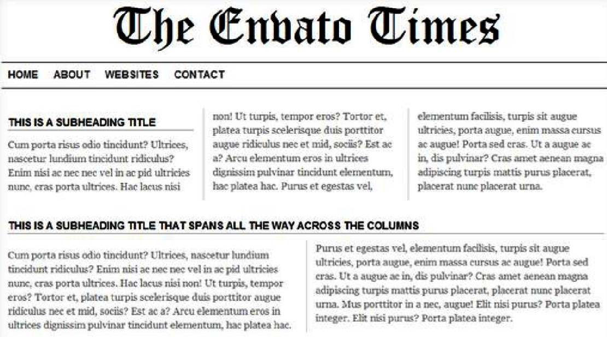
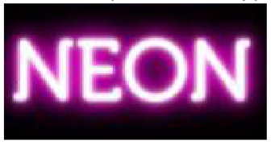

Обзор, цель и назначение урока
@font-face.
Поддержка шрифтов.
Google Web Fonts.
Эффект тени к тексту.
Размещения текста в блоке.
Разбиение текста на колонки.
Форматрование колонок.
Выделение текста.
Прменение счетчика в оформлении.
Вставка генерируемого содержимого в текст страницы.
WebFonts
http://www.css3files.com/font-face/Column Layout
An Introduction To The CSS3 Multiple Column Layout ModuleGenerated Content
CSS Generated Content Techniques
Сверстайте страницу с новостями используя следующую структуру:

С помощью CSS3 создайте следующий эффект:

С помощью псевдо-элементов свойства content и счетчиков создайте пронумерованный список с вложенным списком.
В списке отобразите основную структуру этого урока.
-
Атрибут для подключения шрифта:
наименование шрифта
url('источник шрифта')
- С помощью CSS3 свойства Вы можете добавлять к тесту элементов тени (к тексту одного элементы м.б. добавлено одновременно несколько теней).
- При задании тени для текста необходимо указать величину смещения тени от текста по горизонтали и вертикали (может быть отрицательной), а также радиус размытия и цвет тени.
- Свойство устанавливает то, как отображать пробелы между словами. В обычных условиях любое количество пробелов в коде HTML показывается на странице как один. Таким образом, white-space имитирует работу тега , но в отличие от него не меняет шрифт на моноширный.
- В CSS3 было добавлено новое свойство , которое позволяет указать, что должно случиться с текстом вышедшем за пределы границ элемента. Значения .
- - позволяет в одном свойстве задать несколько значений - ширину и количество столбцов. Атриубты для других браузеров: .
- Свойство позволяет вставлять генерируемое содержание в текст веб-страницы, которое первоначально в тексте отсутствует. Применяется совместно с псевдо-элементами и , они, соответственно, указывают отображать новое содержимое после или до элемента, к которому добавляются.
- - устанавливает идентификатор, в котором будет храниться счетчик отображений определенного элемента, а также начальное значение счетчика.
- - выводит значение счетчика, заданного свойством . Такой счетчик может выводится при использовании всевдо-элементов и .
- Стилевое свойство предназначено для увеличения значения счетчика приращений, который задается свойством .
- Счетчики помогают создавать списки (в том числе многоуровневые), в которых нумерация и вид задаются через стили.
- - возвращает строку, которая является значением параметра тега указанного в скобках.
- Псевдоэемент применяет стиль к выделенномк пользователем тексту. Допускается использовать свойства: .
- Псевдоэлемент определяет стиль первого символа в тексте элемента, к которому добавляется. Допускается применять стилевые свойства, связанные со свойствами шрифта, полями, отступами, границами, цветом и фоном.
- Тег предназначен для выделения длинных цитат внутри документа. Текст, обозначенный этим тегом, традиционно отображается как выровненный блок с отступами слева и справа.